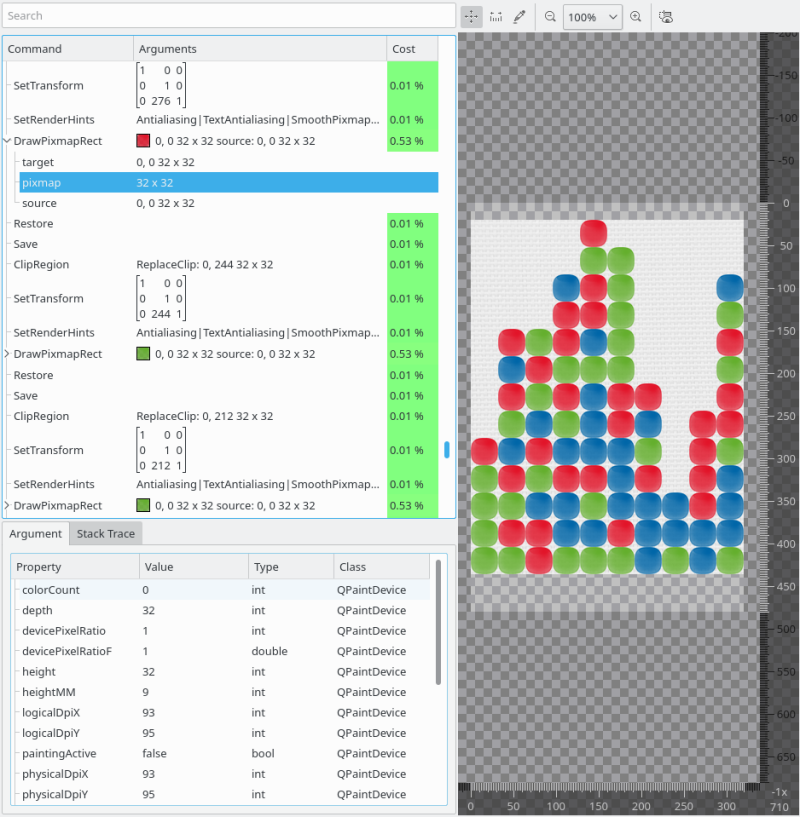

The paint analyzer allows you to inspect every single operation performed on a QPainter. It is available on objects using a QPainter for rendering their visual appearance, as well as on entire scenes.
For individual objects, the paint analyzer is typically not applied recursively to child elements of the selected object, so you only see operations by the current object itself. Supported object types for this include:
Alternatively you can apply the paint analyzer to full scenes recursively. This is available in the following tools:

The paint analyzer consists of three main elements, the command list on the top left, the command details view on the bottom left and the render preview on the right side.
The command list shows all QPainter commands in chronological order. The following information are provided:
The argument details view will also show a stack trace for the currently selected painter command, showing what call chain lead to the command being executed. If debug information are available for the corresponding code, the corresponding source location is also shown, and can be directly opened using the context menu.
Selecting a command in the command list view will cause the render preview to show the visual result up to the selected command, allowing you to inspect the visual output step by step.
The render preview can be panned and zoomed using the corresponding actions in the toolbar at its top. Additionally, a measurement and color picking tool is available that way too.
The render preview can also visualize the current clip area of the QPainter, at the selected command. This is shown with a red shaded overlay, areas covered by this will be clipped.